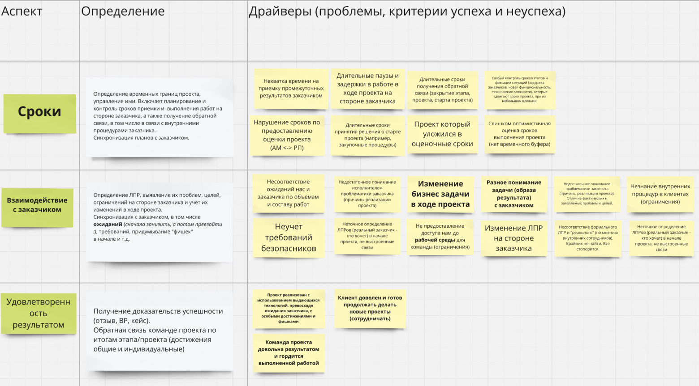

Если вы устали от сотрудников, которых приходится постоянно пинать и контролировать, у меня для вас плохие новости. Вам не поможет замена на более опытных, потому что проблема в другом. Единственный работающий способ, как делегировать сложные задачи и проекты, начать спать спокойно и обойтись без массовых увольнений, описан в этой статье.
Все верят, что если найти правильных людей или правильно обучить действующих сотрудников, то вопрос менеджмента, делегирования сложных задач и проектов будет закрыт навсегда. Что можно сбросить груз постоянного контроля на пару надежных руководителей и, как минимум, высвободить время для решения задач своего уровня, а, как максимум, начать больше уделять времени семье или личному развитию.
Меня зовут Андрей Малахов, я занимаюсь управлением проектами и изменениями более 20 лет. Прошел все карьерные ступеньки от консультанта и бизнес-аналитика до руководителя собственной консалтинговой компании, которая работает с крупнейшими российскими и международными организациями. И более 50% заказчиков приходит ко мне с одной и той же проблемой – как делегировать сложные задачи и проекты с минимальным вовлечением и быть уверенным в результате.
Суровая правда жизни такова, что пока для этого не будут созданы нужные условия, вы, как руководитель организации, будете продолжать все вывозить на себе и делать работу не своего уровня. В этой статье расскажу о единственном работающем способе, как это сделать и какие шаги на примере одного кейса вы можете предпринять уже сейчас.
Но обо всем по порядку.
Ситуация, которая знакома многим до боли. Руководителю приходится все держать на контроле, а то и самому делать работу за сотрудников, потому что… без него точно случится жопа. Такое уже было и не раз, когда о кризисной ситуации он узнавал последним и снова приходилось разгребать все самому. И чтобы такого больше не допустить, он вынужден все бесконечно перепроверять.
И тут возникают вопросы. По какой причине сотрудники не предупреждают о том, что что-то пошло не так? Почему они молчат, когда не хватает людей или в команду от подрядчика выделили джуниора, вместо матерого специалиста? Что их заставляет молчать до конца и всеми силами скрывать неизбежно приближающуюся катастрофу? Что это – безответственность или вопиющая некомпетентность?
Страх остаться виноватыми, непонимание требований к качеству управления и нереалистичные планы – это несколько причин, почему вам могут не говорить всей правды о происходящем на проекте.
И часто, кроме бесконечных перепроверок за сотрудниками, приходится тратить время на то, чтобы в сотый раз объяснить, что и как нужно делать. Если вы этим занимаетесь, то превращаетесь в костыль для команды, без которого рабочие процессы начинают буксовать. Поддерживаете сотрудников, берете на себя чужие задачи и разруливаете все вручную:
Всё совсем плохо, когда это еще и бестолково, потому что у руководителя не получается выполнять подобную работу качественно.
Потому что:
А еще, так как руководитель не обладает полной картиной происходящего на проектах и в силу ограниченности времени, он становится чайкой-менеджером: неожиданно прилетает, наводит много шума и улетает. Он хочет все быстро порешать и часто может предлагать варианты действий, с которыми никто не согласен, но и спорить тоже не хочет. В итоге команда остается в полном параличе без способности делать что-либо самостоятельно и организованно.
Даже если забыть о том, что работа такого руководителя чаще всего напоминает тушение пожара с помощью дырявого ведра и по сути это его проблема, последствия такого подхода к управлению для организации и бизнеса не заставят себя долго ждать. Это:
Поэтому многие, кто когда-либо говорил “Ну и что, почти все так работают и ничего, держатся”, рано или поздно поставили крест на своем бизнесе или управленческой карьере.
Если ключевые менеджеры компании тратят свое время на чужую работу и не занимаются развитием организации по важным для нее направлениям, ее деградация – вопрос времени.
Можно ли им спокойно всё делегировать, чтобы заняться своими задачами?
Увы, нет. Даже при наличии опытных, профессиональных и надежных сотрудников вы не сможете вырваться из ловушки микроменеджмента.
Почему так? Рассказываю на примере одного из недавних кейсов.
Не так давно ко мне обратился заказчик с проблемой: "Я не могу делать столько проектов, сколько нужно для масштабирования компании, потому что все завязано на мне и двух ключевых руководителях проектов."
При этом у компании:
Но:
За 2,5 месяца совместной работы с руководством и ключевыми экспертами мы разработали и внедрили единые правила управления проектами, которые позволили:
Вы можете делегировать сотруднику достижение определенной цели, но без четкой технологии ведения проекта риски сбиться с пути слишком высоки. Вы можете постоянно делегировать задачи… Но ваше вовлечение будет неотъемлемой частью такого процесса.
Наличие понятной технологии, единых правил управления – единственный способ реализовывать проекты компании на автопилоте, который работает с минимальным вовлечением руководства. И чтобы он был по-настоящему полезен, а не стал пустой бюрократической надстройкой, в его основе должны находиться самые важные аспекты управления.
Аспект – область управления проектом, которой важно уделять особое внимание, чтобы все работало так, как нужно. Например, сроки – ключевой аспект во многих организациях, от которого зависит и маржинальность, и скорость получения бизнес-эффекта, и удовлетворенность заказчиков, и репутация, и даже степень вовлеченности руководства в проект (если сроки растягиваются, приходится вмешиваться).
Представьте, что вы решили начать контролировать свои расходы. Но если просто себе пообещать, что все, с понедельника я начинаю следить за ними, едва ли через неделю вас обрадует баланс банковской карты. Чтобы действительно сделать то, что вы задумали, вам нужно регулярно уделять внимание этому вопросу: завести специальную табличку в Excel или скачать приложение, ежедневно заносить данные о каждой трате и раз в неделю анализировать их.
Уделять внимание – значит создавать и использовать артефакты, подтверждающие действия или результаты (отчет за неделю, выгруженный из приложения), и анализировать их в специально выделенное для этого время. Такое выделенное время мы называем событиями – например, совещания, которые проходят по определенному расписанию или с нужной регулярностью.
И в нашем кейсе, как и во многих других, именно с этого мы и начали: во время первых сессий с ключевыми экспертами компании сразу договорились о том, какие аспекты важны именно им в текущей организации и ситуации. Здесь были сроки, ресурсы, команда, документооборот, приживаемость результатов и т.д. Это важные и проблемные зоны, которые ранее требовали постоянного вовлечения руководства.

Аспекты управления проектами
Но ключевой болью был аспект сохранения и передачи экспертизы, на котором я хочу остановиться подробнее. Это область внимания, проблемы в которой напрямую влияли на невозможность делегирования и масштабирования. Из-за недостаточного опыта решения нужных задач или сложности в оценке трудоемкости проектов новые сотрудники не могли сразу начать эффективно работать в своей роли и допускали много глупых ошибок, требовали активного вовлечения опытных сотрудников.
Поэтому внедряемые правила управления проектами должны были решать проблему управления знаниями в компании в том числе.
Ниже поделюсь некоторыми правилами (артефактами и событиями), которые мы внедрили:
Дистиллирование успешного опыта компании и распространение проверенных инструментов на всех сотрудников – то, что позволило не только начать быстро натаскивать новичков, но и снизить риски, которые могут возникнуть при уходе одного из старичков со знаниями “в голове” о том, как управлять конкретным проектом.
Как я уже писал выше, все начинается с определения аспектов. И мы не просто их определяем, но и договариваемся об их важности как на уровне менеджмента, так и на уровне рядовых сотрудников. Потому что, например, уделять внимание аспекту сохранения и передачи экспертизы – важно прежде всего для менеджмента, но не для команды.
Договариваясь об аспектах на уровне руководства и сотрудников, мы договариваемся о том, что для нас действительно важно, что мы не придумываем какие-то правила только ради правил (таких регламентов полно в любой организации). Их необходимость железобетонно обоснована, это не прихоть руководства и не бестолковая бюрократия.
Что еще нужно учитывать: правила управления должны стать единой системой, живым организмом, который может развиваться вместе с организацией. В такой системе все элементы связаны друг с другом. Если у нас есть артефакт, значит должно быть событие, где он используется или создается. Если мы убираем артефакт, то должны проверить, а сможем ли мы без него уделять должное внимание выбранному аспекту и при этом не нарваться на риски. Например, если мы формируем календарный план проекта, то мы его используем во время обсуждения на встречах. Если его убрать, то сможем ли мы без него обсудить состояние проекта, отклонения, зависимости, текущий прогресс? Сможем ли мы уделять достаточное внимание срокам проекта?
Когда есть целостная система из взаимосвязанных элементов, то мы можем что-то убрать и добавить более релевантное потребностям организации.
Но когда у нас есть просто статичная конструкция из правил, рано или поздно некоторые из них устареют (обычно за 1-3 года), и, если их не изменить, то будут снова восприниматьcя как бюрократия.
Потому что руководство оперирует категориями требований – есть шаблон, который надо заполнить. Зачем надо? Кому надо? Как это должно помочь? Возможно, его пару раз заполнят, но в итоге все вернется на круги своя.
Единые правила управления проектами – это договоренности, чему мы уделяем внимание (аспекты) и с помощью чего мы это делаем (артефакты и события). А также когда и с какой регулярностью мы это делаем и кто отвечает за их выполнение.
Конечно, это далеко не все, что нужно. В следующей статье продолжу эту тему и поделюсь, как создавать такие правила управления, которые будут приняты сотрудниками и помогать делать проекты на автопилоте.